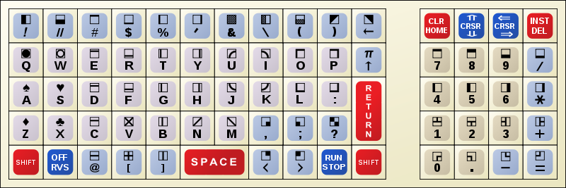

Changing the size of memory or changing the ROM version forces a reset of the PET.
The emulator has an IEEE-488 device at address 8. It can be used load and save (.prg) files.
To load program files that are on your local disk, first select the file with the browse button. Then type LOAD "*",8 into the PET. To save a program, type SAVE "NAME",8 and then you'll be prompted to save the file. Note that IEEE-488 doesn't work with ROM version 1.
There is a large collection of .prg programs here. Take a look under demos/Cursor/ and games/. Some programs don't run on ROM1 and some require more memory than the default 8K.
April, 2014

PET keyboard image authored by Lovelac7 and found on Wikipedia here.
Norbert Landsteiner has made many additions and enhancements to this PET emulator. His emulator can be found here.
Checkers2 copyright (C) 2023 by Thomas Skibo.
Now, 40+ years later, I am rewriting the game in 6502 assembly language so that it is reasonably fast enough to be playable.
Hit the "Play Checkers" button above to automatically load and play.
If you want a copy of the program, you can load it into the emulator with 'LOAD "*",8' (it is the default program) and then do a 'SAVE "CHECKERS2",8' and your browser will prompt you to save the file to your local disk.
June, 2023
{kind=link}